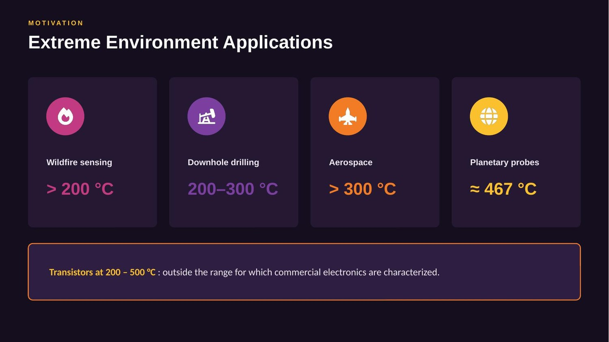
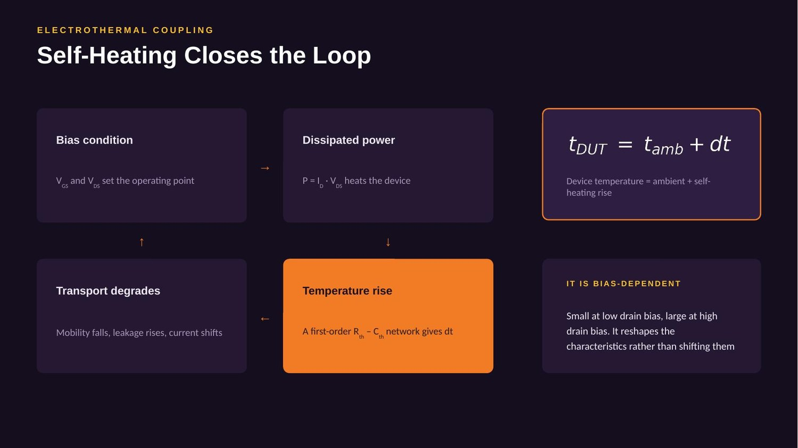
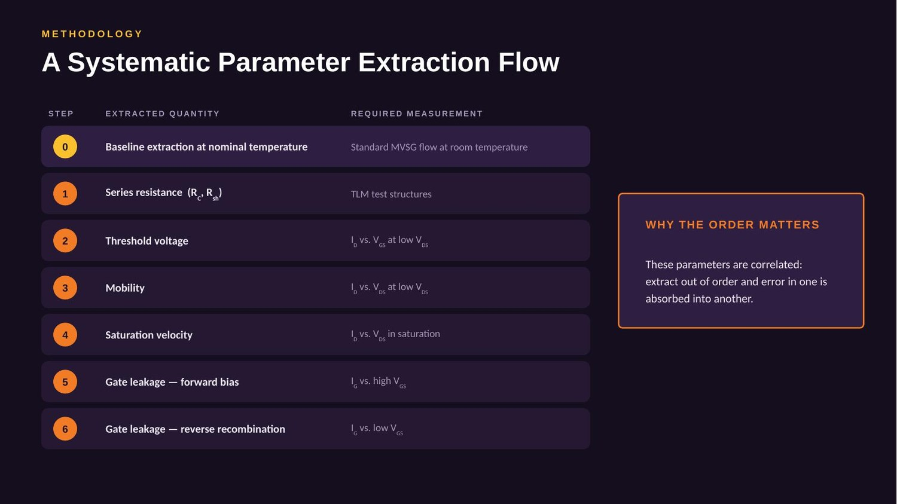
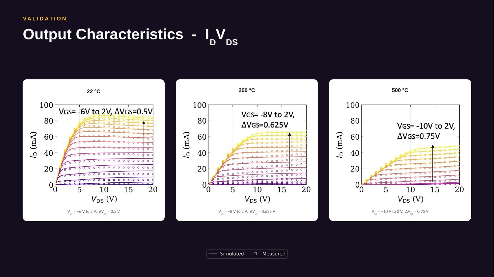
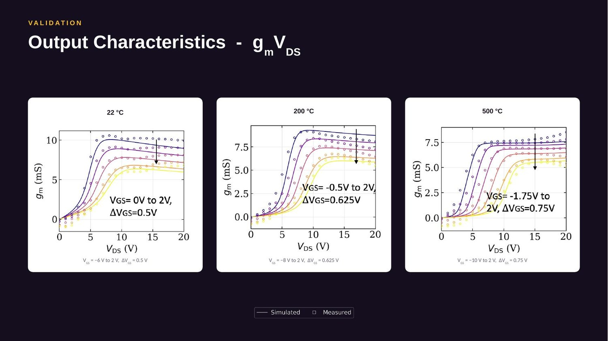
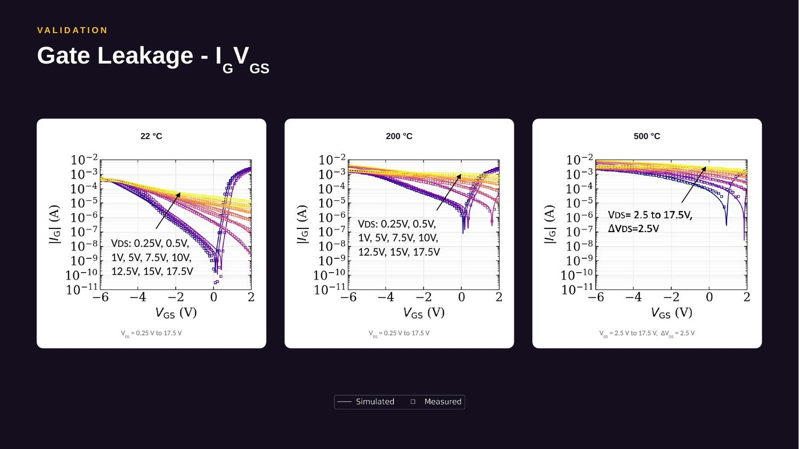

A GaN HEMT compact model that holds at 500 °C
Commercial GaN compact models are calibrated to about 185 °C. Wildfire sensing, downhole drilling and planetary probes need transistors working at 200–500 °C. This work extends the industry-standard MVSG model into that range and validates it against measured devices from 22 °C to 500 °C.
Why it matters
There is a growing class of systems where electronics have to sit at the point of measurement rather than in a thermally controlled enclosure — wildfire monitoring above 200 °C, downhole drilling instrumentation at 200–300 °C, aerospace hardware near engines, and planetary probes (the surface of Venus is around 467 °C). In all of them the transistor itself has to survive the environment.
GaN is the right material for it: a 3.42 eV bandgap gives a low intrinsic carrier concentration, so the device still turns off as temperature climbs, and the 2DEG at the AlGaN/GaN heterointerface carries high current density. Silicon gives up below 185 °C. The NRC has a GaN process built specifically for extreme environments — so the devices exist.
The gap is on the modelling side. A compact model is the only thing a circuit designer ever sees of a transistor; if it is wrong, every circuit built on it is wrong, and you usually find out after fabrication. MVSG — the MIT Virtual Source GaN model, itself developed at Waterloo — is the industry standard, but its temperature dependence was written for commercial ranges. Past 185 °C the effects it leaves out stop being small corrections.

What breaks at high temperature
Five mechanisms dominate, each with a clear physical origin:
| Carrier mobility ↓ | Phonon scattering in the 2DEG cuts linear-region current |
| Injection velocity ↓ | Virtual-source velocity degrades, cutting saturation current |
| Series resistance ↑ | Contact and sheet resistance rise — more bias dropped outside the device |
| Threshold voltage ⇄ | Shifts with temperature, primarily through bandgap narrowing |
| Gate leakage ↑↑ | Thermally activated recombination — climbs by orders of magnitude |
Superimposed on all five is self-heating, which couples them together. Device temperature is ambient plus a rise computed from a first-order Rth–Cth network driven by dissipated power. That closes a feedback loop: bias sets power, power sets temperature rise, temperature rise modifies mobility and leakage, which modifies current and therefore power. The model resolves it self-consistently.
The consequence is that self-heating is bias-dependent — small at low drain bias, large at high drain bias. It reshapes the characteristics rather than shifting them uniformly, and that reshaping is directly visible in the measured data.

The extraction flow, and why order matters
A compact model without an extraction procedure is of limited practical use, so the second half of the work is a systematic flow: a baseline extraction at nominal temperature following standard MVSG, then six steps for the temperature coefficients, each tied to a specific measurement.
| Step 0 | Baseline at nominal temperature — standard MVSG flow at RT |
| Step 1 | Series resistance (RC, Rsh) — TLM test structures |
| Step 2 | Threshold voltage — ID–VGS at low VDS |
| Step 3 | Mobility — ID–VDS at low VDS |
| Step 4 | Saturation velocity — ID–VDS in saturation |
| Step 5 | Gate leakage, forward bias — IG at high VGS |
| Step 6 | Gate leakage, reverse recombination — IG at low VGS |
The sequence isn't arbitrary. These parameters are correlated, and extracting them out of order lets error in one get absorbed into another. Fit mobility before series resistance has been independently determined and the resistance error lands in the mobility coefficient — you get a parameter that reproduces the data and means nothing physically. Extracting resistance before transport, and low-bias regimes before high-bias ones, keeps each parameter constrained to the regime where its mechanism actually dominates.

Validation
Validated against measured NRC 1st-generation extreme-environment HEMTs. Symbols are measurement, lines are model — the same parameter set and same equations throughout, with only temperature varied.


Peak drain current drops substantially between room temperature and 500 °C, consistent with the mobility and injection-velocity degradation above. The differing curvature at high drain bias is self-heating, and the model reproduces it.

Gate leakage is the harder case, and the most interesting result. The separation between drain-bias curves within each panel is a self-heating signature: at higher drain bias, greater dissipation raises device temperature, so thermally activated leakage increases. The same gate voltage produces different leakage purely as a function of drain bias.
A model without an electrothermal subcircuit collapses those conditions onto a single characteristic. Reproducing the separation is evidence the thermal network is capturing real physics rather than acting as an extra fitting knob.
Conclusion & next
Temperature dependence added to MVSG for both channel current and gate leakage, validated 22 °C to 500 °C, with a reproducible extraction flow that transfers to other processes and device generations. Next: S-parameter and large-signal validation, and second-generation devices — a step toward practical extreme-environment GaN circuit design.
GaN-on-Si integrated power stage
Separate from the modelling work: new product development on a GaN-on-Si IPS — an integrated power stage placing a silicon driver die on a unidirectional GaN device. My contribution covers dynamic characterization, performance evaluation against internal metrics, defining test procedures, and analysing optimal and sub-optimal operating parameters including slew-rate control and protection features. Alongside that, technology work with the FAE team on competitor benchmarking and packaging layout practices for larger dies in low-ohmic and enhancement-mode GaN.